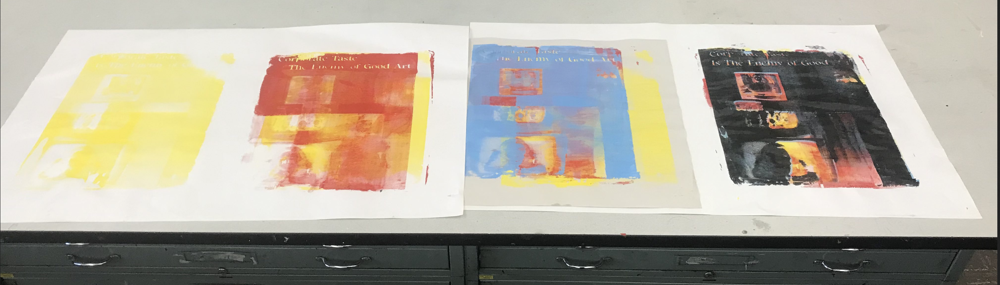

I created a set of images to coat in nightshade and feed back to an AI. I curated a few AI-generated images to use in this project; I made photonegatives of these in halftoned layers, then manually printed them in CMYK order via silkscreens. I will then added explaining the project and printmaking process with white ink over the final layer. This reverses the roles of artist and tool; the AI is making the 'art', and I am just printing it.
These tools-- silkscreening, photoshop, digital printers, photo emulsion, and lead type-- span artmaking technologies from the 13th century to the modern day. AI is a tool like any other, but it is being used to our detriment as artists. As such, regrettably, it may be appropriate to poison the tool until it can be freed from corporate control. I'm basing the final poster design off of old IBM ads. Each halftoned layer will be coated and submitted to the AI for sampling, along with the completed poster.
This is essentially a mechanical timeline of imagery production, image appropriation, and evolving art-making technologies, using the long legacy of art production to poison the new AI tool. This directly engages with Mark Tribes' NMA definition because it discusses emerging media technologies and the unfortunate misuse of the tool. The project engages with the AI’s stolen mass of knowledge in a co-constructive way until the last moment when the product of its labor is used to poison it. This is meant to be a direct parallel to how corporate AI projects rely on the corpus of knowledge/media made by artists but harm us through theft and the cheapened, impersonal mechanization of our labor.
Images of the Work:


